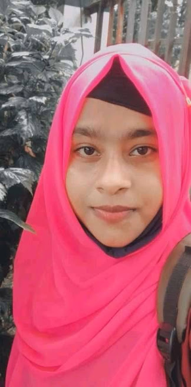
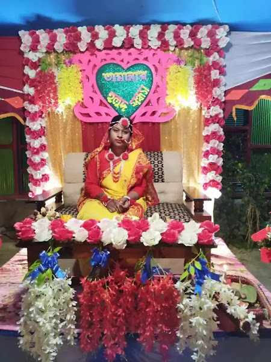

I first met him on Facebook. Facebook brought him to me. Many thanks to Facebook for this. Just as Facebook has done a lot of damage to my life, it has also done a lot of the opposite. The biggest thing Facebook has to give me is my favorite people. My love


My favorite person. My love Tamanna Talukdar Tama. Friends used to call him Tamu. Home in Baruda upazila of Comilla. 2022 SSC examinee. My peers. I affectionately called her Mickey's mother.Lilavati was her nickname given to me. He used to call me Mr. Poet.
Lilavati liked cats very much. He had two cats, one Mickey and the other Nicky. Mickey is big, so I used to call him Mickey's mother. Nicki is not in her world today. Nikki died after Lilavati left.


Suddenly one day it all ends. Lets finish. Lilavati's family puts an end to it all. The sound of her crying still rings in my ears. I couldn't hold him. Today he is far away. There was a time when if we didn't talk for an hour, we would both go crazy. But I'm still crazy but I can't talk like before. Here she is someone else's wife. It is not that he is good. His family has finished it all.